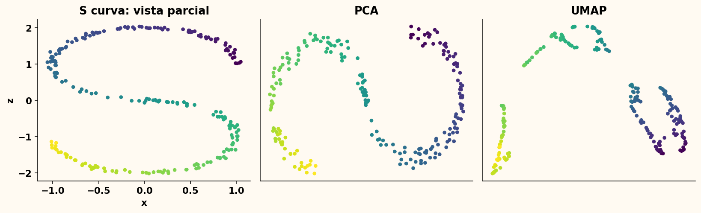
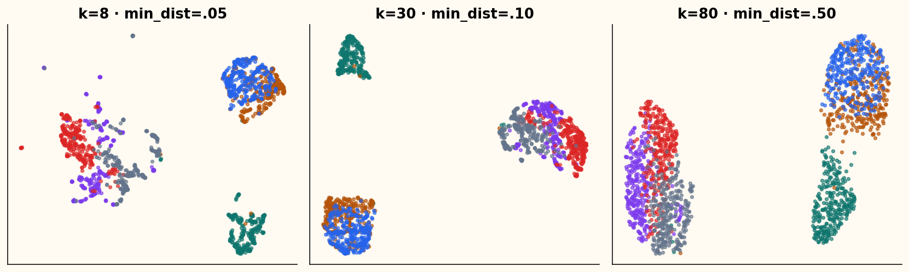
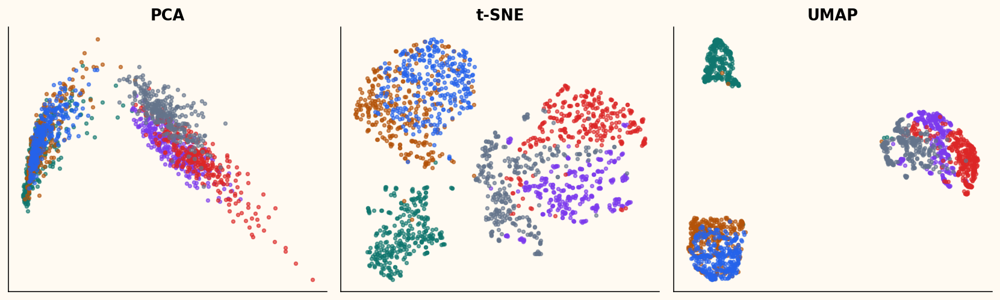
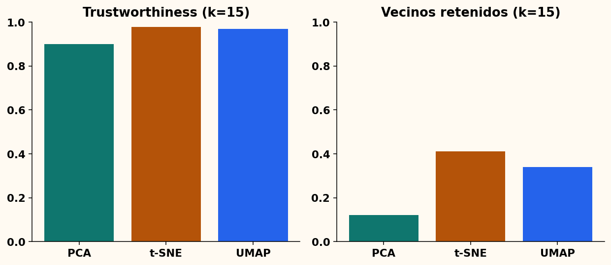

Del grafo local al mapa
UMAP y la preservación que sí podemos defender
Semana 9 · 16 de octubre de 2026
El mapa comienza como una red
¿Qué conexiones locales sostienen la forma de los datos?
UMAP no empieza buscando dos ejes: empieza construyendo vecinos.
Elegir k fija una escala de observación
k pequeño: estructura muy local y sensible.
k grande: integra contextos más amplios.
No equivale al número esperado de grupos.
\sigma_i adapta la escala local
\sum_{j=1}^{k}\exp\left[-\frac{\max(0,d_{ij}-\rho_i)}{\sigma_i}\right]
=\log_2(k)
Cada fila resuelve su propia búsqueda binaria.
Una arista dirigida expresa pertenencia
w_{i\to j}=\exp\left[-\frac{\max(0,d_{ij}-\rho_i)}{\sigma_i}\right]
w_{i\to j} y w_{j\to i} pueden diferir.
La unión difusa reconcilia direcciones
w_{ij}=w_{i\to j}+w_{j\to i}-w_{i\to j}w_{j\to i}
Resultado: matriz simétrica con valores en [0,1].
“Topología” no significa copia perfecta
UMAP intenta conservar relaciones del grafo difuso.
Proyectar a dos dimensiones obliga a perder información.
No garantiza distancias, áreas ni grupos verdaderos.
El plano usa una curva suave
v_{ij}=\frac{1}{1+a\lVert y_i-y_j\rVert^{2b}}
a y b dependen de min_dist y spread.
Dos grafos se comparan con entropía cruzada
C=-\sum_{i<j}\left[w_{ij}\log v_{ij}+
(1-w_{ij})\log(1-v_{ij})\right]
Aristas fuertes atraen; pares sin conexión repelen.
Todos los no vecinos serían demasiado costosos
La implementación didáctica usa todos los pares en muestras pequeñas.
umap-learn aproxima vecinos y muestrea ejemplos negativos.
El núcleo pequeño hace visible el mecanismo
graph = fuzzy_neighbor_graph(X, k)
Y = PCA(n_components=2).fit_transform(X)
for epoch in range(n_epochs):
Y -= rate * cross_entropy_gradient(graph, Y)
El contrato no cambia con el algoritmo
reducer: BaseEmbeddingReducer
result = reducer.fit_transform(X)
Cambiar t-SNE por UMAP no cambia el notebook consumidor.
Una variedad curva no cabe en una vista plana

n_neighbors y min_dist no hacen lo mismo

Separar colores no es el objetivo matemático
Una configuración puede producir islas más nítidas y preservar menos vecinos.
Las etiquetas ayudan a interpretar; no validan por sí solas el embedding.
Tres mapas responden preguntas distintas

Ninguna métrica decide sola

Una recomendación une evidencia y límites
Observo → cuantifico → interpreto → comprobaría → no puedo concluir.
Incluya actividad, participante, sensibilidad y métrica local.
La calidad también pertenece al modelo
flake8 → mypy --strict → pylint ≥ 9.5 → pytest + cobertura
Un mapa reproducible necesita código que otro equipo pueda mantener.
Cierre: agregue métodos, no espagueti
- ¿Qué objeto preserva UMAP?
- ¿Cómo difieren
n_neighbors y min_dist?
- ¿Dónde agregaría Isomap sin cambiar el notebook?